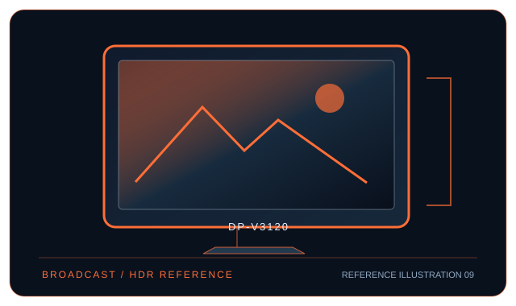

[ INDIVIDUAL COMPONENT // DISPLAYS ]
Canon DP-V3120 4K HDR Reference Display
31.1-inch 4K HDR broadcast reference LCD with 12G-SDI, HDMI and integrated calibration.

IDENTIFICATION: Canon model DP-V3120. Confirm the full rear-label model, region and hardware revision; published capabilities can differ by firmware, input board and bundle.
Specifications
| Catalog subcategory | Professional displays |
|---|---|
| Exact model / panel | 31.1-inch IPS LCD, high-brightness reference panel |
| Native resolution | 4096 × 2160 (DCI 4K; also supports UHD 3840 × 2160) |
| Refresh rate | Up to 60 Hz for supported 4K input formats |
| Color gamut | Reference modes include BT.2020, DCI-P3 and BT.709; Canon product documentation does not provide a single directly comparable coverage percentage for all modes. |
| Calibration features | Integrated calibration sensor and monitor-side calibration functions; use Canon’s supported external measurement instrument and control software for full reference workflows. Calibration behavior depends on selected mode and supported probe. |
| Inputs / companion ports | 12G/6G/3G/HD/SD-SDI BNC × 4 and HDMI 2.0 × 1; SDI pass-through outputs, LAN/remote control and USB service/data port. No DisplayPort input. |
| VESA / mounting | 200 × 200 mm VESA mounting pattern; use a mount rated for the monitor’s mass and installation orientation. |
| Power | AC 100–240 V, 50/60 Hz; approximately 175 W typical, up to 840 W maximum according to installation/mode. |
Compatibility and deployment
Best suited to broadcast/cinema sources: use a 12G-SDI path for full-bandwidth DCI 4K workflows or HDMI 2.0 for supported UHD/4K formats. A computer must provide a compatible HDMI timing or use a suitable SDI output interface; it is not a native DisplayPort/USB-C desktop monitor. Verify timing, color encoding and cable integrity in the setup guide.
Preservation notes
Record the complete rear-label SKU, serial/date code, installed firmware and options, calibration report, supported signal timing, tested source and cable, mounting hardware, regional AC rating and image condition. Keep the original hood/stand and model-specific setup documentation with the display; use trained service personnel for internal work.
Manufacturer documentation and references
- Canon — DP-V3120 specificationsManufacturer product or specification reference for model identification and published capabilities.
- Canon USA — DP-V3120 support and manualsManufacturer support, user guide or product-specific documentation.